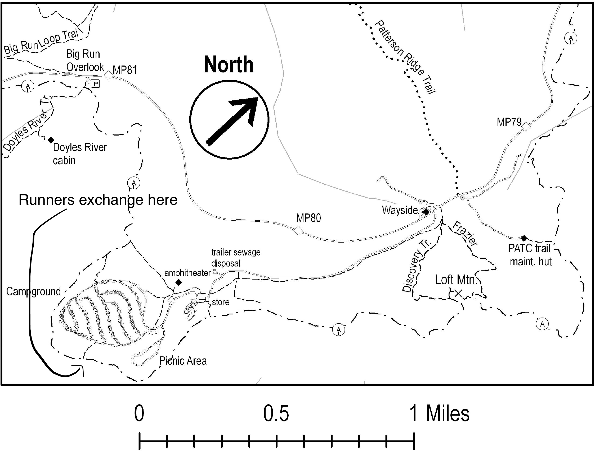

Shenandoah National Park · Skyline Drive MP 79–81 · Appalachian Trail relay exchange point
This is your own course map (from "loft mountain exchange.pdf"), showing the campground, the Appalachian Trail looping around its west and south side, and every connecting side trail: Doyles River Trail and Big Run Loop Trail to the north, Patterson Ridge Trail and the PATC trail maintenance hut spur to the east, and the Frazier Discovery Trail linking the Wayside to Loft Mtn. The hand-marked "Runners exchange here" point on the west side is the relay handoff — this lines up with the Blackrock Gap–Loft Mountain / Loft Mountain–Pinefield Gap leg boundary in the relay plan.
Runners exchange here — marked on the map along the A.T. on the campground's west side, reached by the short unmarked connector from the campground loop road (the curved line running from "Campground" up to the exchange point).

Source: loft mountain exchange.pdf (from your computer).